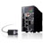
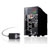
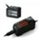
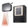
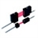
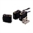

Building Automation
Industrial Automation
Power Automation & Safety


Bangladesh Distributor
Displacement Sensors / Measurement Sensors
These Sensors can be used to measure distances and heights. A wide variety of models is available, including Laser Sensors, LED Sensors, Ultrasonic Sensors, Contact Sensors, Eddy Current Sensors, and more.
 High Precision Measurement Sensor

High Precision Measurement Sensor

Nano-level measurement resolution. Lineup of ultra-compact, white light confocal sensors and long-range-detection laser sensors.
Displacement Sensors for Differentiation

Smart Sensors designed to allow anyone to easily use advanced sensing performance. Even with laser, proximity, contact, and other sensing methods, operations are essentially the same.
Profile Measuring Sensors

A wide laser beam for 2D sensing of steps, widths, sectional areas, inclinations and other shapes.
Measurement Sensors

Sensors that detect objects and measure their widths, thicknesses, and other dimensions. Models are available with CCD or laser scanning methods to meet different application and precision needs.
Other Displacement Sensors

Displacement Sensors that measure distances and heights. A wide variety of models is available, including Laser Sensors, LED Sensors, Ultrasonic Sensors, Contact Sensors, Eddy Current Sensors, and more.